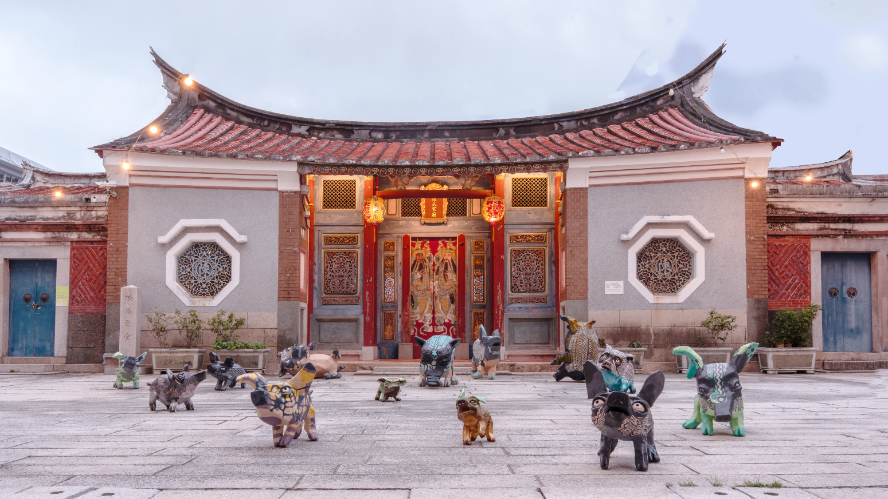

主辦單位｜陳德聚堂
執行單位｜誠美社會企業、府城甘哉
進駐藝術家｜臺南市導覽協會、蓬萊齋工作室、川畑完之、引風堂種子創作、原本藝術

【陳德聚堂與它的靈魂⼈物】
南明永曆十五年間（西元1661-1664年）， 44歲的陳澤以「宣毅前鎮」跟隨明鄭軍隊渡海來臺， 並揣家帶眷， 率領族群在臺發展， 建宅於當時的下大埕(大約位於西門路與忠義路之間)一帶。
其後， 陳澤轉戰沙場， 跟隨鄭經反清復明，不幸病逝於廈門。 陳澤官拜統領光祿大夫， 兼管護營左右先鋒， 經歷鄭成功丶鄭經兩代的重要武將，人們多尊稱為「統領公」，故將他所建的宅 第稱為「统領府」。
陳德聚堂即建於此時，是一座承接荷治時期開展東寧王國時期，歷經清國、日治直至現今，橫跨近400年歷 史的臺南市定古蹟。
陳德聚堂靈魂人物「陳澤」作為東寧王國時期的統領，常與作為東寧王國的總制「陳永華」混淆，然而一 人為武一人為文，皆為鄭氏東寧王國的兩大支柱。
陳德聚堂族譜雖無明確記載曾作為居住用的統領府於何時改為宗祠，僅有「臺灣歸清後，改建宗祠」等簡短敘述，但從現存最 早正廳之「翰華生藻」匾落款可知，為九世孫陳焜中試貢生後，與其他四房於康熙32年(1693)二月重修統領府時，陳家後人便將 府邸改建為宗祠，取名「德聚堂」。
民國74年11月27日內政部指定為三級古蹟。
【伴隨臺灣走過歷史歲月的場域】
陳德聚堂在將近400年的歷史洪流中伴隨臺灣社會變遷，從官邸到家廟再轉變為宗祠，一度被強佔為日人軍隊房舍, 經族親力爭回歸後，又遇到時代考驗，短暫時間成為民居、電影院與補習班; 最後在族親的努力下終於恢復陳德聚堂的輝煌身段，成為臺南市定古蹟「陳姓大宗祠德聚堂」簡稱「陳・德聚堂」。
主辦單位｜陳德聚堂
執行單位｜誠美社會企業、府城甘哉
進駐藝術家｜臺南市導覽協會、蓬萊齋工作室、川畑完之、引風堂種子創作、原本藝術